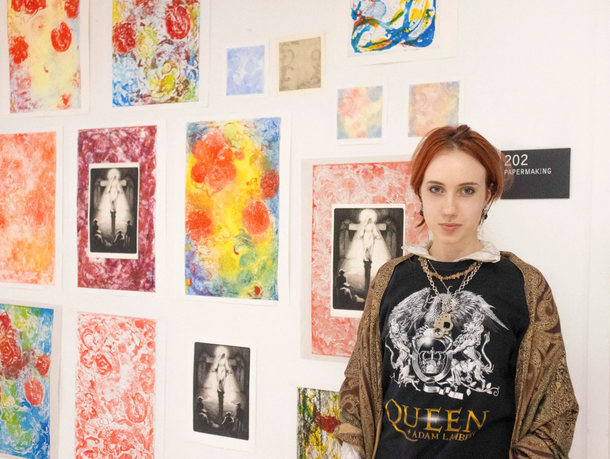

Nice to meet you, you can call me Nastia. I do a little bit of everything.
I’m a Baltimore-based artist who decided to become a graphic designer 6 years ago. Alongside with graphic design, I do painting, photography and printmaking. I grew up in Kharkiv, Ukraine and I’m very proud of my hometown and heritage.
Available for commissions, collaboration, inquiries at solarbuggg@gmail.com.

EXPERTISE
My choices in design are informed by over 10 years of experience in fine arts. This multidisciplinary approach allows me to bring refreshing ideas and unique solutions to the brands I work with. I combine typography, editorial design, and motion design to create comprehensive visual systems.
EXPERIENCE
01/2026 - 02/2026
Graphic Design Intern
Port Discovery Children’s Museum
Baltimore, MD
My completed projects include redesigning a museum-wide interior wayfinding system; assisting in redesigning the entry doorway. My responsibilities as a Sings and Exhibits intern at Port Discovery Children’s Museum include desigining graphics, cataloging existing signage and conducting research.
02/2026 - 04/2026
Layout Designer
MARQUE Magazine
Baltimore, MD
I worked on the issue of MARQUE fashion magazine, run by Johns Hopkins University student community. This is the collaborative work of a team of graphic designers. I was responsible for editorial photo retouch for the magazine and layout design.
01/2025 - 05/2025
Graphic Design Assistant
Full Bleed Magazine
Baltimore, MD
I worked as a Graphic Design Assistant in the marketing campaign for the 8th issue of Full Bleed Magazine https://www.full-bleed.org/about.
07/2024 - 11/2024
Brand identity specialist
STEP IT Academy
Kharkiv, Ukraine
Was a member of STEP IT Academy graduates designer team. Participated in two projects as a of the hands-on experience program offered by the Academy to recent graduates. Designed +70 pages book of brand guidelines for Glow Up start-up.
06/2022 - 02/2023
Freelance graphic designer
Kharkiv, Ukraine
Developed personal brand and portfolio. Received recognition (50k views on Behance) and got over 20 job offers and commissions.
07/2022 - 11/2022
Graphic designer and illustrator
Digital Design Agency “inshi”
Kharkiv, Ukraine
Worked as a member digital Design Agency “inshi”. Designed and redesigned e-books, articles, adverts, illustrations. Created 50+ illustrations and accomplished 20 documents.
EXHIBITIONS
Spring 2026
A Lake in A Desert
MICA Rosenberg Gallery
The place where I lived but I can never call it home, Photography
Spring 2026
Integrated Future
McDonough School Tuttle Gallery
Datamosh, Video Art, Creative coding
Fall 2025
A Place to Take Up Space: Dismantled
MICA Rosenberg Gallery
Silent Choking, Painting, Fiber Art
Fall 2025
2025 First Year Experience (FYE) Exibition
MICA Meyerhoff and Decker Galleries
Beautiful moments, Mixed Media collage
AWARDS
MICA
Foundation Scholarship, Fall 2025
Creative Vision Award, Fall 2024-present
Presidential Scholarship, Fall 2024-present
Academic Honors Scholarship, Fall 2024-present
Thalheimer Scholarship, Fall 2024-present
Trustee Scholarship, Fall 2024-present
Bridge4Students
Bridge4Students Scholarship,Spring 2025
Behance
Featured (twice) in Editorial, VISION Magazine vol. 1 and vol.2, 2022-2023
Featured (twice) in InDesign, VISION Magazine vol. 1 and vol.2, 2022-2023
Featured in Photoshop, (F)PPLproject, 2023
Featured in Photography, (F)PPLproject, 2023
2024-present
MICA Provost's List
GPA of 3.8 or higher
EDUCATION
09/2024-present
Maryland Institute College of Art
Baltimore, MD
BFA Graphic Design